Savvy Security LLC
Articles
Notes on security, systems architecture, and infrastructure.
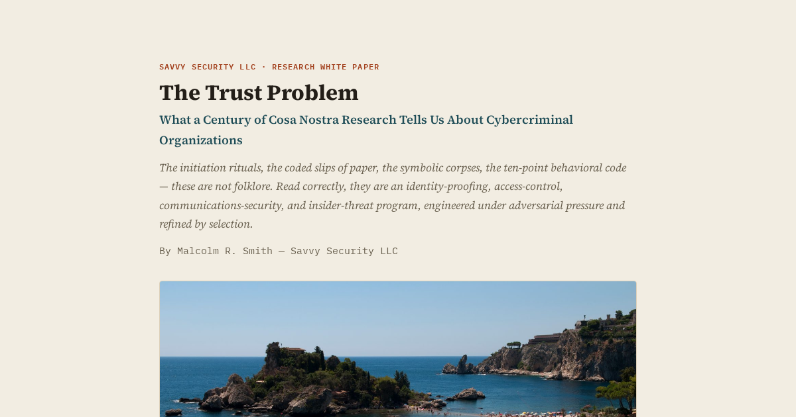
The Trust Problem
What a century of Cosa Nostra research tells us about cybercriminal organizations — the initiation rituals, the coded notes, and the ten-point code, read as an identity-proofing and communications-security program.
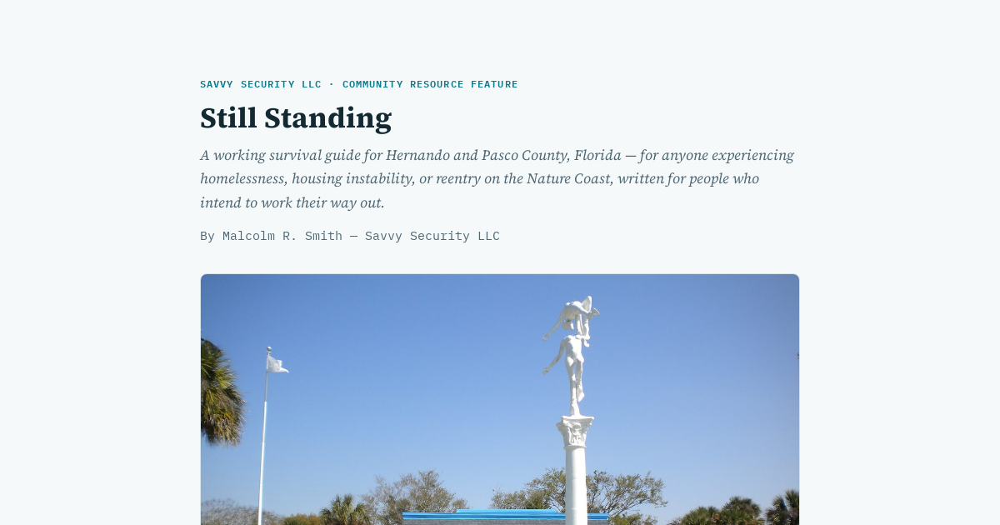
Still Standing
A working survival guide for Hernando and Pasco County, Florida — for anyone experiencing homelessness, housing instability, or reentry on the Nature Coast, written for people who intend to work their way out.
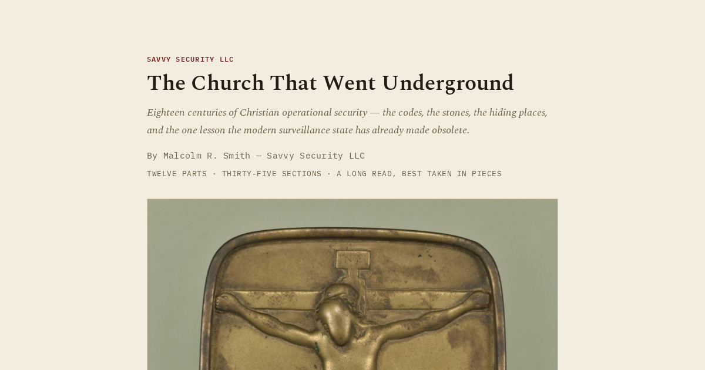
The Church That Went Underground
Eighteen centuries of Christian operational security — the codes, the stones, the hiding places, and the one lesson the modern surveillance state has already made obsolete.
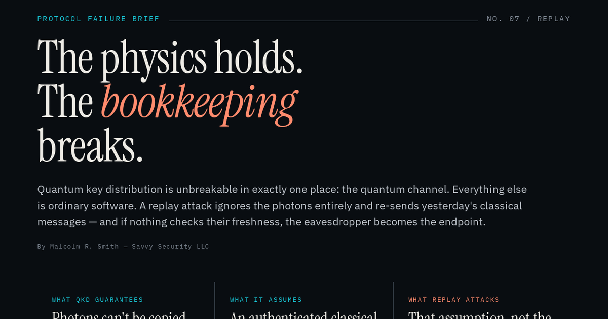
The Physics Holds. The Bookkeeping Breaks.
Quantum key distribution is unbreakable in exactly one place: the quantum channel. A replay attack ignores the photons entirely and re-sends yesterday's classical messages — and if nothing checks their freshness, the eavesdropper becomes the endpoint.
The Hit Worked. The Disguise Didn't.
A municipal police force took apart a foreign intelligence operation in thirty days, using nothing but hotel records and a spreadsheet. Sixteen years later, every category of surveillance that broke the case is available to anyone with a data-broker subscription.
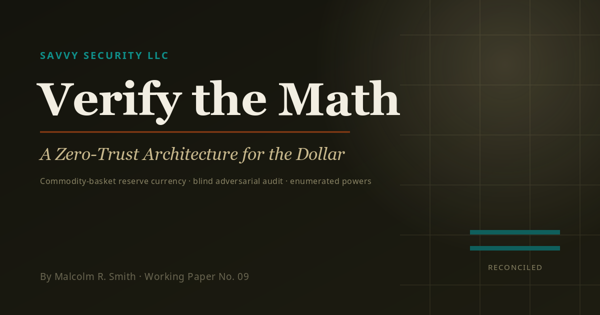
Verify the Math
The Federal Reserve's entire trusted computing base is a twelve-member committee, unaudited on the dimension that matters most. A zero-trust replacement: a commodity-basket window, a blind adversarial audit borrowed from security engineering, and twelve enumerated powers — eleven of them denied.
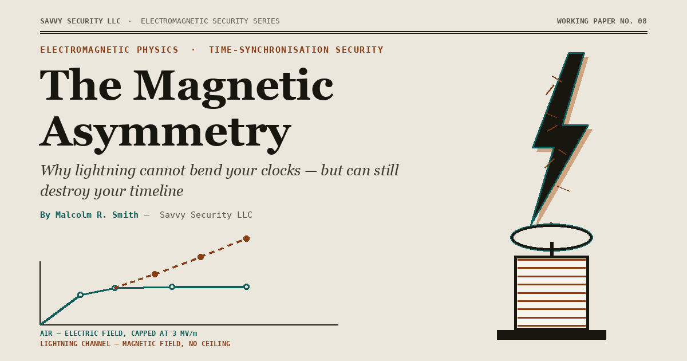
The Magnetic Asymmetry
Lightning cannot alter the rate of your clocks — the physics forbids it by a factor of 10³¹. But it can alter what your clocks report, through a magnetic field the atmosphere has no way to limit. Worked through to Kerberos, TLS, and GNSS timing security.
Prisoner 4859
Witold Pilecki walked into Auschwitz on purpose to build a resistance network from inside the wire. He ran it for two and a half years, got the intelligence out four different ways, and extracted clean. His own side executed him for it.
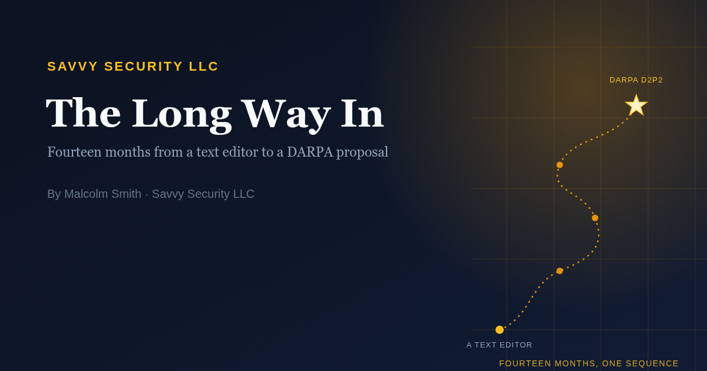
The Long Way In
How a one-man research shop in Hernando County ended up at the table with a federal research program — and what it actually took, including the parts that went sideways.
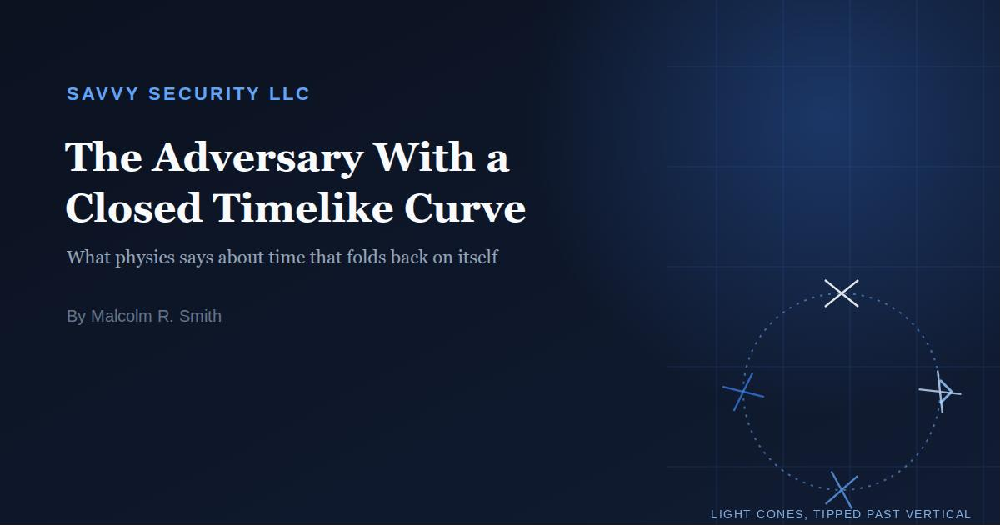
The Adversary With a Closed Timelike Curve
Your adversary has access to the past — not logs of it, the past itself. A survey of what mathematical physics has actually established about backward-in-time influence, organized around the question a security researcher would ask: what does it break, and what stops it?
The Payload Was the Easy Part
Stuxnet gets remembered for four zero-days and a PLC rootkit. The five-year human intelligence operation that got it inside Natanz — and what it means for American infrastructure — is the part nobody defends against.
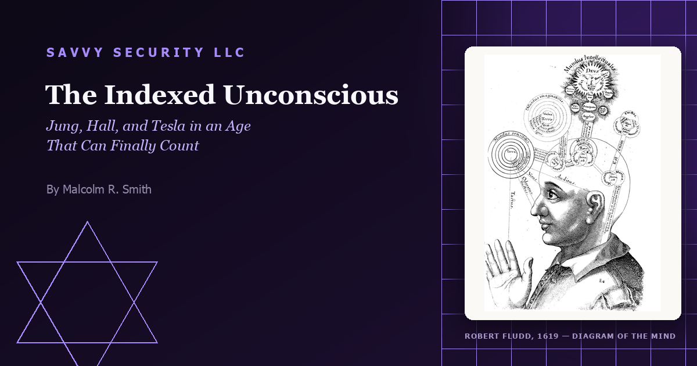
The Indexed Unconscious
Jung's collective unconscious, Manly P. Hall's Secret Teachings of All Ages, and Tesla's Akasha were unfalsifiable for a century. Cultural phylogenetics, neural eigenmodes, and the Platonic Representation Hypothesis in AI just built the instruments to test the wager — and the results are stranger than either side expected.
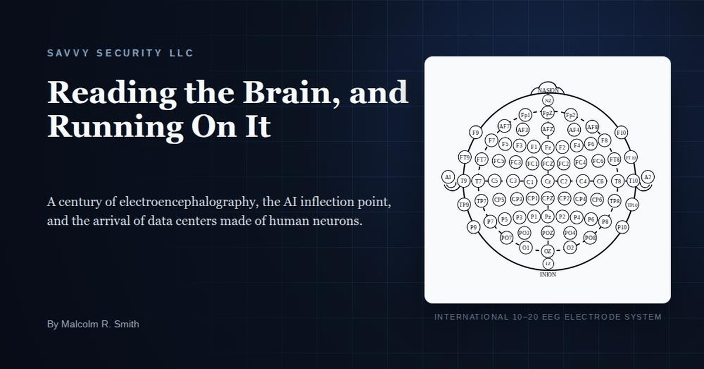
Reading the Brain, and Running On It
Two research programs — reading the human brain and computing with it — have both reached commercial deployment within the same eighteen months. What EEG can and cannot detect, and the arrival of data centers built from living neurons.
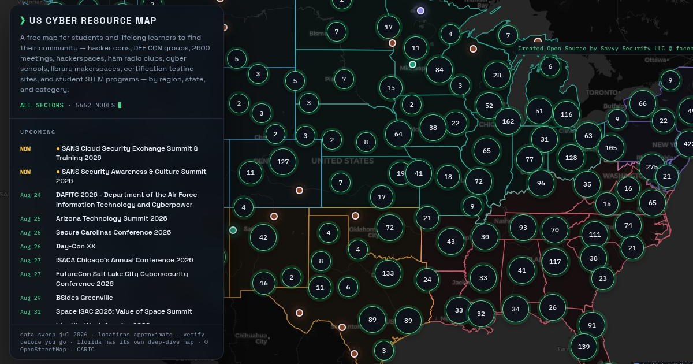
Everybody Lied to You About Breaking Into Cybersecurity
Only 4% of employers say entry-level cyber roles are hard to fill — the shortage is at the senior end. Here's what actually opens the door, and a free map of 5,000+ places to go do it.
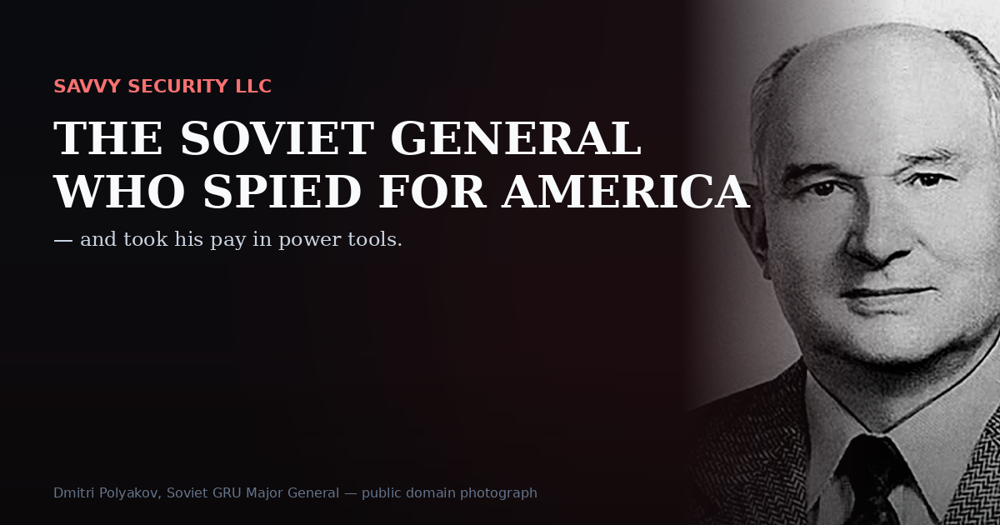
The Soviet General Who Spied for America — And Took His Pay in Power Tools
He was the most valuable spy the United States ever had. He refused the money. He refused the escape. And in the end, two Americans got him killed.
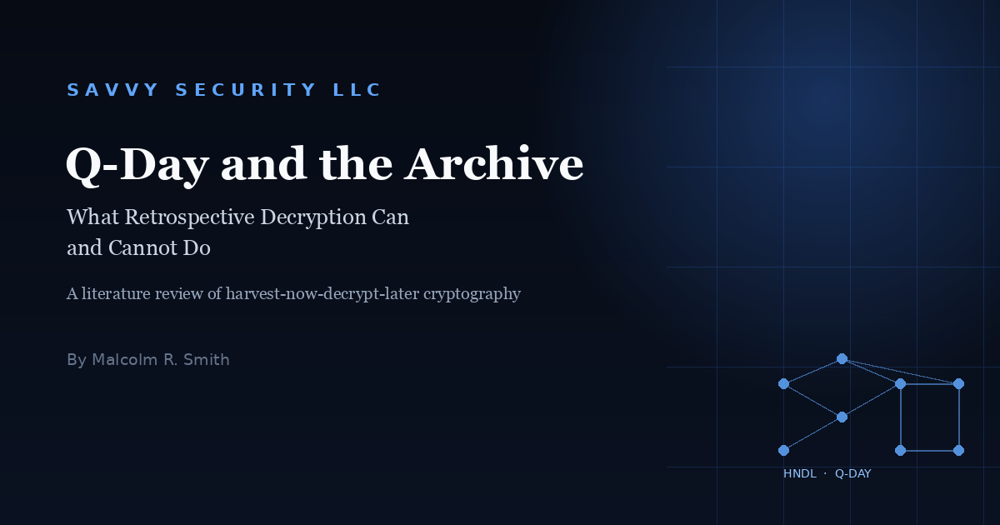
Q-Day and the Archive: What Retrospective Decryption Can and Cannot Do
Does Q-Day mean governments finally read the criminals' mail? Testing that claim against the physics, the VENONA precedent, and the statute of limitations gives a stranger, more interesting answer.
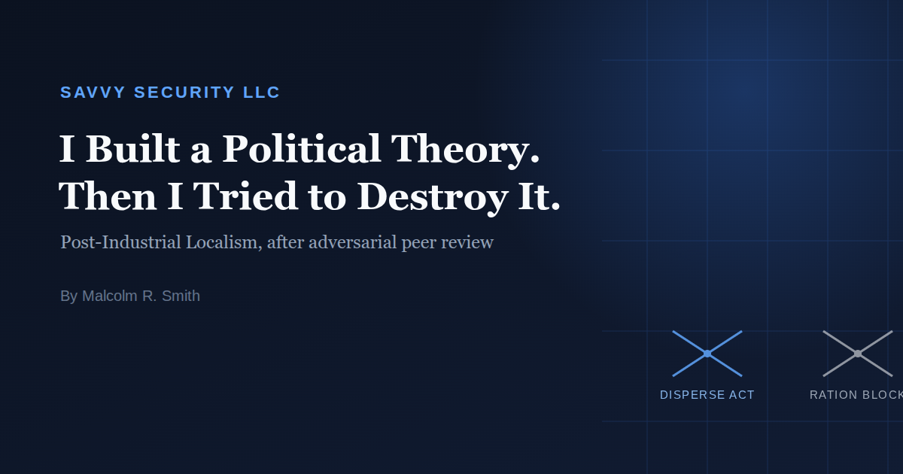
I Built a Political Theory. Then I Tried to Destroy It.
I handed my framework, Post-Industrial Localism, over for hostile adversarial review. Here's what broke, what survived, and the one rule everything else follows from.
The DEFCON 34 Badge Isn't a Badge — It's an Open-Source Security Chip You Get to Keep
Bunnie Huang's Baochip-1x turns this year's DEFCON badge into a verifiable, keepable hardware security key — and a new benchmark for open silicon.
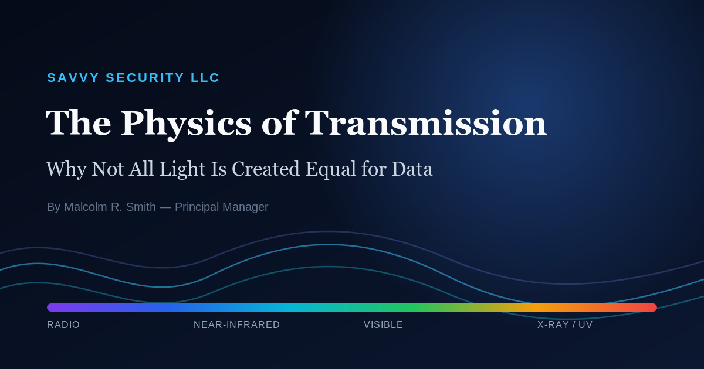
The Physics of Transmission: Why Not All Light Is Created Equal for Data
Bandwidth, attenuation, and quantum limits: why 1550nm dominates fiber, blue-green light rules the ocean, and X-rays don't carry your data.
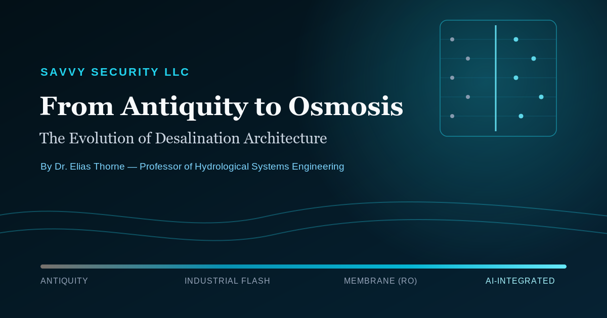
The Long Ascent: A Civilizational Review of Desalination
Five thousand years of desalination, sourced and fact-checked against 31 references — from a sponge over a brass cauldron to Israel's steam-driven membrane grid.
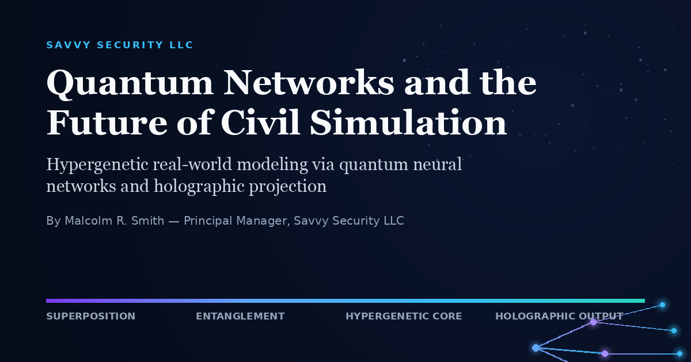
Quantum Networks and the Future of Civil Engineering Simulation
Digital twins model what is. This architecture models what could be — hypergenetic quantum simulation, neuromorphic AI, and holographic projection for infrastructure planning.